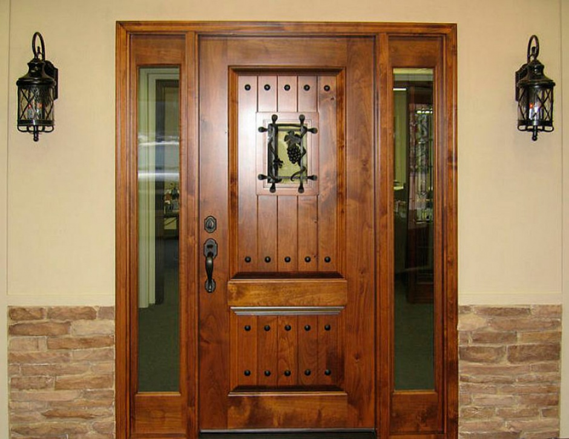
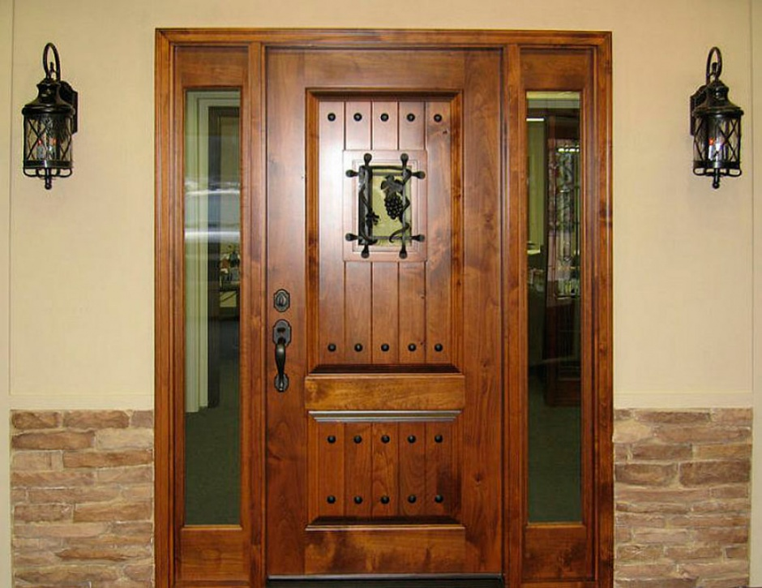

Pagrindinis - Faneruotos vidaus durys kaune - Pigios geros kokybės durys – DurysKaune
2020.10.27 06:37

Toggle navigation Pagrindinis Vidaus Durys EKO FANERUOTOS DURYS LAMINUOTOS DURYS Paslaugos Blogas Kontaktai 0
Shopping cart
"PORT" Ąžuolas
Eko faneruotos vidaus durys
"PORT"
Skaityti Daugiau "PORT" Kapučino
Eko faneruotos vidaus durys
"PORT"
Skaityti Daugiau Vidaus Durys
EKO faneruotos vidaus durys
EKO FANERUOTA LAMINUOTOS DURYSNida Serija
LAMINUOTOS DURYS Skaityti DaugiauNorma Decor
LAMINUOTOS DURYS Skaityti DaugiauVirgo Serija
LAMINUOTOS DURYS Skaityti DaugiauStrada Serija
LAMINUOTOS DURYS Skaityti DaugiauLinea Forte serija
LAMINUOTOS DURYS Skaityti Daugiau“PORT 3” Venge
EKO FANERUOTA Skaityti Daugiau“PORT 4” Venge
EKO FANERUOTA Skaityti Daugiau“PORT 2” Venge
EKO FANERUOTA Skaityti Daugiau“PORT” Venge
EKO FANERUOTA Skaityti Daugiau„PORT“ Balintas ąžuolas
EKO FANERUOTA Skaityti Daugiau“PORT” Kapučino
EKO FANERUOTA Skaityti Daugiau“PORT 4” Pilkas r.
EKO FANERUOTA Skaityti Daugiau“PORT 10” Kapučino
EKO FANERUOTA Skaityti Daugiau“PORT 2” Kapučino
EKO FANERUOTA Skaityti Daugiau“PORT 2” Balintas ąžuolas
EKO FANERUOTA Skaityti Daugiau“PORT 3” Balintas ąžuolas
EKO FANERUOTA Skaityti Daugiau
Blogas
Naujausi Įrašai
Check out our blog Read moreEko faneruotos vidaus durys. Kompromisas tarp kainos ir išvaizdos
Uncategorized March 7, 2017 By Durys Kaune Leave a commentKambario durys turi būti ne tik tvirtos, bet ir gražios, puošnios. Tam jos yra dengiamos ekofaneruote. Toks durų padengimo būdas yra pakankamai stiprus ir tampa itin tikroviška medžio imitacija. Ekofaneruotės durys gali būti įvairių spalvų, tačiau visgi populiariausias išlieka medžio imitacijos dizainas, kuris yra universaliausias dera bet kokiame interjere. Durys su ekofaneruote yra atsparios
Read moreFaneruotos vidaus durys: privalumai ir pasirinkimas
Uncategorized March 7, 2017 By Durys Kaune Leave a commentVidaus durų pasirinkimas dažniausiai yra paprastesnis, nes keliama gerokai mažiau reikalavimų, palyginti su lauko durimis, kurių funkcija – apsaugoti namus – yra labai reikšminga. Bet visgi jei vidaus durys pasirenkamos tik pagal grožį, neretai eksploatuojant nusiviliama savo pasirinkimu (na, nebent grožis suderintas su kokybe), kai tokios durys prastai izoliuoja garsą, susibraižo, deformuojasi ir kt. Rinkoje
Read moreFANERUOTOS DURYS. KODĖL JOS TAMPA VIS POPULIARESNĖS?
Uncategorized March 7, 2017 By Durys Kaune Leave a commentŠiuolaikinė durų gamybos rinka siūlo vartotojui ne tik turtingą vidaus ir lauko durų konstrukcijų įvairovę, bet ir gausybę medžiagų, iš kurių gaminamos šios konstrukcijos. Durų varčios pagrindą gali sudaryti natūralus medžio masyvas, plastikas, stiklas, metalas ir medžio lukštas. Kuo išsiskiria durys, padengtos medžio lukštu (arba kitaip, – faneruotos durys), ir kokiomis savybėmis pasižymi tokie gaminiai? Pabandysime atsakyti
Kontaktai
Adresas: Draugystės g. 19, Kaunas (3 įėjimas 3 aukštas 329 kabinetas).Telefonas: +37068378763
El. pašto adresas: info@duryskaune.lt © 2017 Durys Kaune. Visos teisės saugomos
- Modernios durys - Stepmaster
- Vidaus Durys - Vilniuje, Kaune, Klaipėdoje | Kambariodurys.lt
- Durys > Plastikinės durys | Vokiška Kokybė | KOMMERLING, KBE
- Pigios vidaus durys Vilniuje
- Pagrindinis - Faneruotos vidaus durys kaune - Pigios geros ...
- Durys | Hörmann durų programa stabilioms statyboms
- Reisvita - Durys namui
- Aukščiausios kokybės Medinės durys, Ąžuolinės durys ...
- Laminuotos durys - Katalogas - DurysDurytes
- VIDAUS durys | DURŲ PASAULIS
- Modernios durys - Stepmaster
Aukščiausios kokybės Medinės durys, Ąžuolinės durys, Pušinės durys, Laminuotos durys, Faneruotos durys, Lauko durys Pagamintos Lietuvoje Už patrauklią kainą
- Vidaus Durys - Vilniuje, Kaune, Klaipėdoje | Kambariodurys.lt
E-durys – tai elektroninė durų parduotuvė, prekiaujanti vidaus, lauko, specializuotos paskirties durimis bei durų priedais. Čia rasite duris pasižyminčias ne tik savitu stiliumi ar unikaliu dizainu, bet ir išskirtiniu funkcionalumu: nematomas vidaus duris, stumdomas duris, abipuses varstomas duris, priešgaisrines ar garsą ...
- Durys > Plastikinės durys | Vokiška Kokybė | KOMMERLING, KBE
Ilgaamžiškumas Durys gaminamos tik iš aukščiausios kokybės brandaus ąžuolo medienos, yra ilgaamžės, tvirtos, puikiai izoliuoja garsą. Aukščiausia kokybė Kontroliuojame ir esame atsakingi už visą tiekimo grandinę: nuo medienos atrankos, pristatymo į gamyklą, tikslaus technologinio medžio paruošimo ciklo, produkto gamybos iki ...
- Pigios vidaus durys Vilniuje
Kambario durys turi būti ne tik tvirtos, bet ir gražios, puošnios. Tam jos yra dengiamos ekofaneruote. Toks durų padengimo būdas yra pakankamai stiprus ir tampa itin tikroviška medžio imitacija.
- Pagrindinis - Faneruotos vidaus durys kaune - Pigios geros ...
Medinės durys pardavinėjamos tiek natūralios, tiek jau dažytos (beicuotos) įvairiomis spalvomis. Faneruotos durys – karkasas gaminamas iš klijuotos medienos, abi pusės dengiamos medžio drožlių plokščių sluoksniais, o paviršius padengtas natūralia ar „fine line“ faneruote. Laminuotos durys puikiai dera prie šiuolaikinio ...
- Durys | Hörmann durų programa stabilioms statyboms
Apsauginės durys rūsiui arba įėjimui į garažą, ugnį sulaikančios durys katilinėms arba daugiafunkcinės durys dirbtuvėms – mūsų aukštos kokybės plieno durys pasirūpins, kad tarp savo namų sienų jaustumėtes patogiai ir saugiai. apie funkcines duris jūsų namams.
- Reisvita - Durys namui
Šarvuotos durys, vidaus durys, lauko durys, metalinės laiptinių durys, plastikinės lauko durys. Gamyba ir prekyba. Šiauliai
- Aukščiausios kokybės Medinės durys, Ąžuolinės durys ...
Šiltos ir puošnios lauko durys Jūsų namams. Kokybiškos vidaus durys. Kambario durys puikiai tiks Jūsų interjerui.
- Laminuotos durys - Katalogas - DurysDurytes
Kokybiškos ir pigios vidaus durys Vilniuje. Didelis vidaus ir lauko durų pasirinkimas. Pas mus rasite itin platų vidaus medžio masyvo durų, faneruotų durų, laminuotų durų ir lauko medžio masyvo durų, šarvuotų durų asortimentą.
- VIDAUS durys | DURŲ PASAULIS
Medinės lauko durys - specialiai apšiltintos ir impregnuotos, Lietuviškai žiemai ir vasarai pritaikytos medienos masyvo durys. Apsauga. Labai svarbu, kad projektuojant namą medinės lauko durys būtų apsaugomos nuo tiesioginių saulės spindulių ir nuo tiesioginio lietaus.
Aukščiausios kokybės Medinės durys, Ąžuolinės durys, Pušinės durys, Laminuotos durys, Faneruotos durys, Lauko durys Pagamintos Lietuvoje Už patrauklią kainą
E-durys – tai elektroninė durų parduotuvė, prekiaujanti vidaus, lauko, specializuotos paskirties durimis bei durų priedais. Čia rasite duris pasižyminčias ne tik savitu stiliumi ar unikaliu dizainu, bet ir išskirtiniu funkcionalumu: nematomas vidaus duris, stumdomas duris, abipuses varstomas duris, priešgaisrines ar garsą ...
Ilgaamžiškumas Durys gaminamos tik iš aukščiausios kokybės brandaus ąžuolo medienos, yra ilgaamžės, tvirtos, puikiai izoliuoja garsą. Aukščiausia kokybė Kontroliuojame ir esame atsakingi už visą tiekimo grandinę: nuo medienos atrankos, pristatymo į gamyklą, tikslaus technologinio medžio paruošimo ciklo, produkto gamybos iki ...
Kambario durys turi būti ne tik tvirtos, bet ir gražios, puošnios. Tam jos yra dengiamos ekofaneruote. Toks durų padengimo būdas yra pakankamai stiprus ir tampa itin tikroviška medžio imitacija.
Medinės durys pardavinėjamos tiek natūralios, tiek jau dažytos (beicuotos) įvairiomis spalvomis. Faneruotos durys – karkasas gaminamas iš klijuotos medienos, abi pusės dengiamos medžio drožlių plokščių sluoksniais, o paviršius padengtas natūralia ar „fine line“ faneruote. Laminuotos durys puikiai dera prie šiuolaikinio ...
Apsauginės durys rūsiui arba įėjimui į garažą, ugnį sulaikančios durys katilinėms arba daugiafunkcinės durys dirbtuvėms – mūsų aukštos kokybės plieno durys pasirūpins, kad tarp savo namų sienų jaustumėtes patogiai ir saugiai. apie funkcines duris jūsų namams.
Šarvuotos durys, vidaus durys, lauko durys, metalinės laiptinių durys, plastikinės lauko durys. Gamyba ir prekyba. Šiauliai
Šiltos ir puošnios lauko durys Jūsų namams. Kokybiškos vidaus durys. Kambario durys puikiai tiks Jūsų interjerui.
Kokybiškos ir pigios vidaus durys Vilniuje. Didelis vidaus ir lauko durų pasirinkimas. Pas mus rasite itin platų vidaus medžio masyvo durų, faneruotų durų, laminuotų durų ir lauko medžio masyvo durų, šarvuotų durų asortimentą.
Medinės lauko durys - specialiai apšiltintos ir impregnuotos, Lietuviškai žiemai ir vasarai pritaikytos medienos masyvo durys. Apsauga. Labai svarbu, kad projektuojant namą medinės lauko durys būtų apsaugomos nuo tiesioginių saulės spindulių ir nuo tiesioginio lietaus.
 
